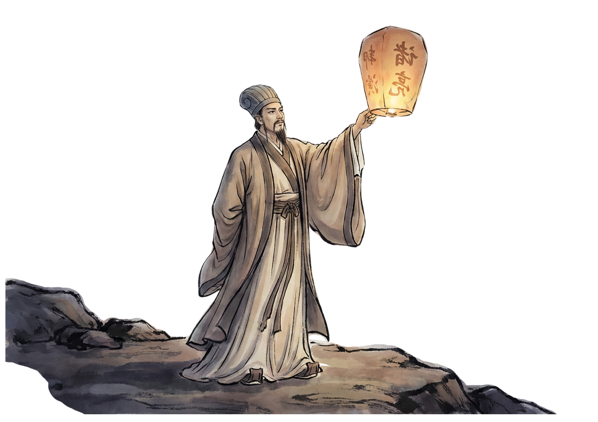
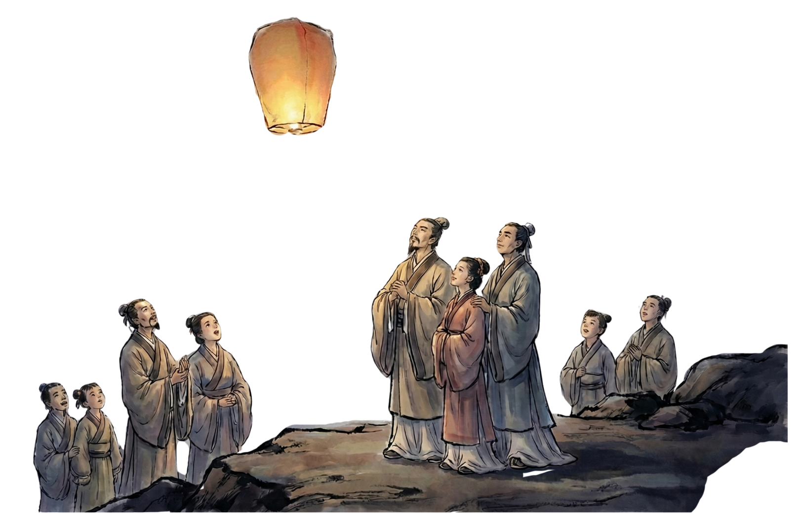
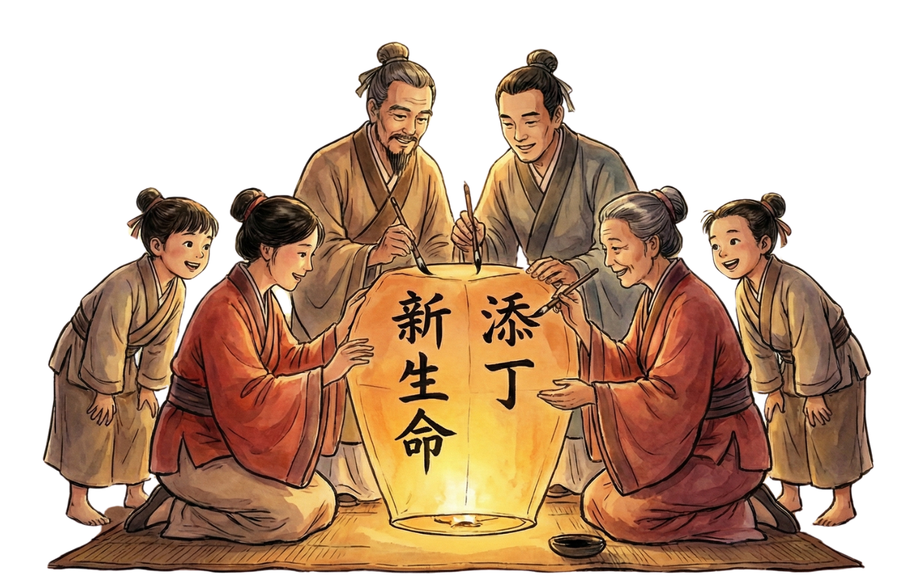
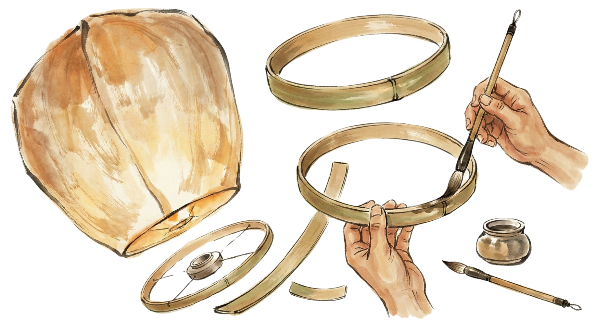

History of Chinese Sky Lanterns
天灯历史源流

The Strategist's Signal (Wartime Origins)
《军师的烽火：战时起源》
The story begins not with celebration, but with survival. In the turbulence of the Three Kingdoms period (circa 220–280 AD), the brilliant military strategist Zhuge Liang (courtesy name Kongming) found his army trapped by enemy forces. With no way to send a messenger on the ground, he looked to the sky. He crafted the first "floating balloon" using oiled rice paper and a bamboo frame, releasing it as a distress signal to summon reinforcements. These "Kongming Lanterns" were the world’s first hot-air balloons, born from the necessity of war.
这故事的起点并非庆典，而是求生。在烽火连天的三国时期（约公元220-280年），杰出的军事家诸葛亮（字孔明）率军陷入敌军围困。陆路传信无望之际，他举首望天。用浸油宣纸与竹骨制成首个"浮空灯"，放飞求援信号召集援军。这些"孔明灯"便成为世界上最早的热气球，诞生于战时的迫切需求之中。
From Safety to Fertility
从平安到祈愿
In Taiwan (Pingxi): During the Qing Dynasty, remote villages lived in fear of bandits. When winter raids forced villagers to flee into the mountains, watchmen stayed behind. A rising sky lantern was the "all-clear" signal—a beacon in the night telling families it was safe to return home.
在台湾（平溪）：清朝时期，偏远村落常受盗匪侵扰。冬日匪患迫使村民避入深山时，守望者会留守村中。一盏升空的天灯便是“平安信号”——犹如暗夜灯塔，告知家人可安然返家。


In Hainan: The tradition took a linguistic turn. In the local dialect, "Tian Deng" (Sky Lantern) sounds almost identical to "Tian Ding" (Adding a Son). Lighting a lantern became a ritual not just for safety, but for the growth of the family, a prayer for children and prosperity.
在海南：这项传统发生了语言上的转义。当地方言中，“天灯”与“添丁”发音相近。燃放天灯不仅是为祈求平安，更成为家族人丁兴旺的仪式，寄托着子嗣绵延、家业昌盛的愿景。

Crafting the Light
巧手制天灯
The magic of the sky lantern lies in its simplicity. Traditionally, it requires only natural elements: a sturdy frame of bamboo, a shell of rice paper, and a fuel cell of waxy paper or cloth. The paper is treated with oil to make it water-resistant and durable. It is a delicate balance of engineering—light enough to float, yet strong enough to hold the fire that powers its ascent.
天灯的妙处在于其质朴的工艺。传统制作仅需天然材料：竹条扎成牢固骨架，宣纸糊作灯罩，蜡纸或布块作为燃料基座。纸张经浸油处理以防水耐用。这需要精巧的平衡——既要轻盈足以飘升，又需坚韧能承载托起它飞向苍穹的火焰。
The Sea of Wishes
愿汇星河
Today, the lantern has shed its military skin completely. It is now a canvas for the human heart. In massive festivals like the Pingxi Sky Lantern Festival, thousands gather to write their deepest hopes—health, love, fortune—onto the paper sides. When released together, they form a slow-moving river of stars, a collective act of letting go of the past and sending dreams to the heavens.
如今，天灯早已褪去军事外衣，化作承载心愿的画布。在平溪天灯节等盛大庆典中，成千上万的人们齐聚，将健康、姻缘、富贵等最深切的期盼书写于灯面。当万千天灯同时升起，便汇成一条缓缓流淌的星河，成为人们告别往昔、寄梦苍穹的集体仪式。